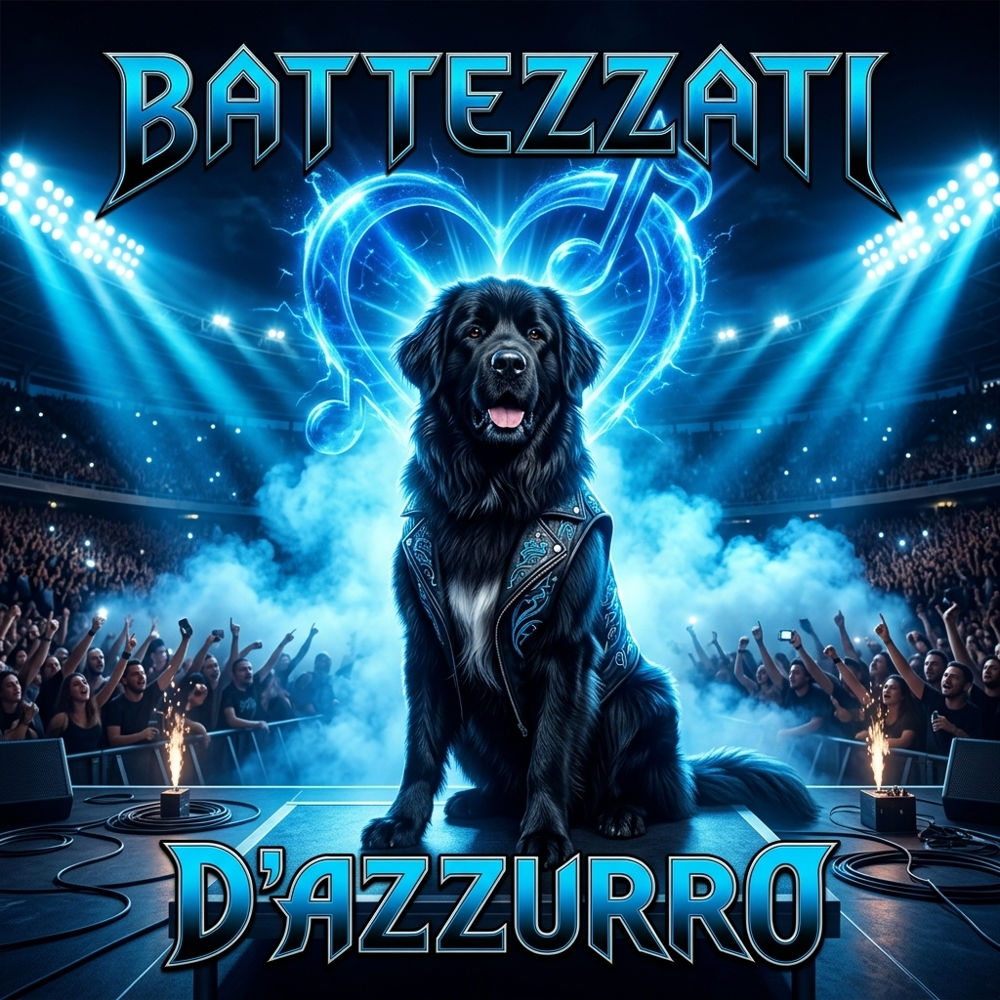

BATTEZZATI D'AZZURRO
Il nuovo singolo del progetto Napoli Centenary
Musica, emozioni e storie senza tempo

Il nuovo singolo del progetto Napoli Centenary
Black Dog è un progetto musicale indipendente nato dall'esigenza di raccontare emozioni, storie e identità attraverso la musica.
Un percorso artistico dove rock italiano, atmosfere cinematografiche e radici napoletane si incontrano.
L'artista mantiene un'immagine discreta: al centro non c'è il personaggio, ma il messaggio delle canzoni.
Singolo
BATTEZZATI D'AZZURRO è il singolo principale del progetto Napoli Centenary. Un omaggio musicale alla storia, alla passione e all'identità napoletana attraverso un brano rock emozionale. Una canzone dedicata a chi vive Napoli come appartenenza, memoria e sentimento.
Il videoclip ufficiale di BATTEZZATI D'AZZURRO, progetto Napoli Centenary.
Guarda su YouTubeIl racconto della produzione musicale e visiva del progetto Black Dog.
Progetto: Napoli Centenary
BATTEZZATI D'AZZURRO è il singolo principale del progetto Napoli Centenary. Un omaggio musicale alla storia, alla passione e all'identità napoletana attraverso un brano rock emozionale. Una canzone dedicata a chi vive Napoli come appartenenza, memoria e sentimento.
Artista: Black Dog
Compositore/Autore: Antonio Pipolo
Progetto: Napoli Centenary
Black Dog è un progetto musicale indipendente nato dall'esigenza di raccontare emozioni, storie e identità attraverso la musica. Focus sulla musica e il messaggio, non sul personaggio.
Comunicato ufficiale sul lancio del singolo Battezzati d'Azzurro - Progetto Napoli Centenary
Scarica PDFSingolo: BATTEZZATI D'AZZURRO
Artista: Black Dog
Compositore/Autore: Antonio Pipolo
Progetto: Napoli Centenary
Genere: Rock Italiano Indipendente
Copyright: ℗ 2026 Black Dog | © 2026 Antonio Pipolo